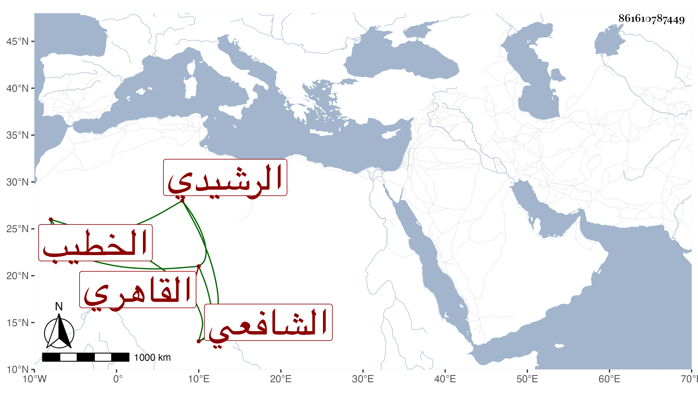

0902Sakhawi.DawLamic.ITO20230111-ara1.EIS1600.861610787449
Biography ID: 861610787449
1020
يحيى بن محمد بن عبد الله بن محمد بن إبرهيم الشرف ابن شيخنا الشمس ابن الجمال الرشيدي الأصل القاهري الشافعي الخطيب الماضي أبوه وجده . ولد بعد التراويح في ليلة سابع عشرى رمضان سنة إحدى وأربعين وثمانمائة بجوار جامع أمير حسين ونشأ في كنف أبيه فقرأ القرآن وسمع على أبيه وغيره وخطب بعده بالجامع المذكور وأثنى الناس على خطابته وقراءته في المحراب مع شكالته وبهائه فخطبه الأتابك أزبك للخطابة بجامعه بل واستقر به إمامه وسافر معه في بعض التجاريد واستناب في بعضها مرة من خلفه ولم ينتقل عن تواضعه وأدبه مع كسله وفتوره عن الاشتغال وربما شهد بالحانوت الذي عند القنطرة وطلبه الزيني بن مزهر فخطب بمدرسته عند صلاة بعض القصاد بها لكونه أخطب من خطيبها .
